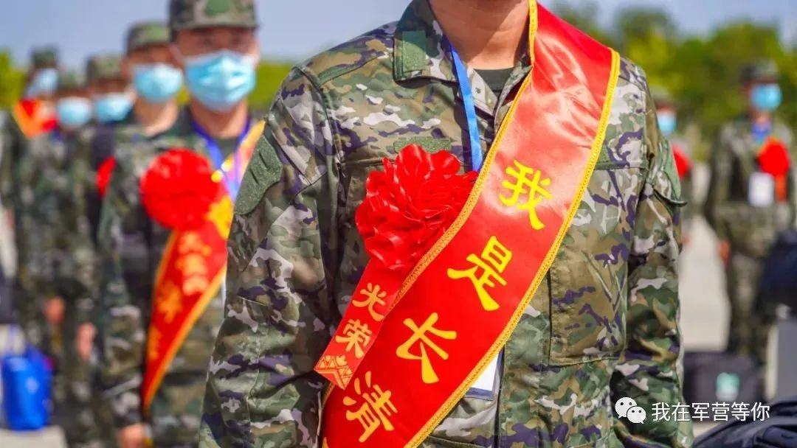

高考成绩出来后填报志愿挺重要的，如果本科线边缘又是男生肯吃苦的，跟香港身份一样花7年时间赌一个北京户口+铁饭碗，但至少有个本科学历垫底。为什么说肯吃苦，大家都知道在中国义务兵是两年，听我娓娓道来
北京有两所大专，分别是北京电子科技职业学院和北京工业职业技术学院，先报上并服从志愿，顺利入学并在大二的9月份去当兵。两年退役后到手大概20万的津贴，回到学校继续完成专科学业，大三毕业时再去学校招生办利用这个退伍军人的身份申请免试专升本，去升级到北京当地的公办本科，再读两年就可以拿到全日制本科文凭，最后报名北京退役大学生士兵的定向招聘，就是北京当地事业编的铁饭碗，还附赠北京户口
当然2+2+1+2=7年，这七年拿20万+个铁饭碗也挣不了几个钱，唯一比较有优势的只剩北京户口了。为什么说只有男生可以，因为女兵入伍要看高考分数的，至少得过一本线。不过丑话说在前头，体检没过、政审没过，全剧终，所以高考失利还有路能走
北京有两所大专，分别是北京电子科技职业学院和北京工业职业技术学院，先报上并服从志愿，顺利入学并在大二的9月份去当兵。两年退役后到手大概20万的津贴，回到学校继续完成专科学业，大三毕业时再去学校招生办利用这个退伍军人的身份申请免试专升本，去升级到北京当地的公办本科，再读两年就可以拿到全日制本科文凭，最后报名北京退役大学生士兵的定向招聘，就是北京当地事业编的铁饭碗，还附赠北京户口
当然2+2+1+2=7年，这七年拿20万+个铁饭碗也挣不了几个钱，唯一比较有优势的只剩北京户口了。为什么说只有男生可以，因为女兵入伍要看高考分数的，至少得过一本线。不过丑话说在前头，体检没过、政审没过，全剧终，所以高考失利还有路能走
